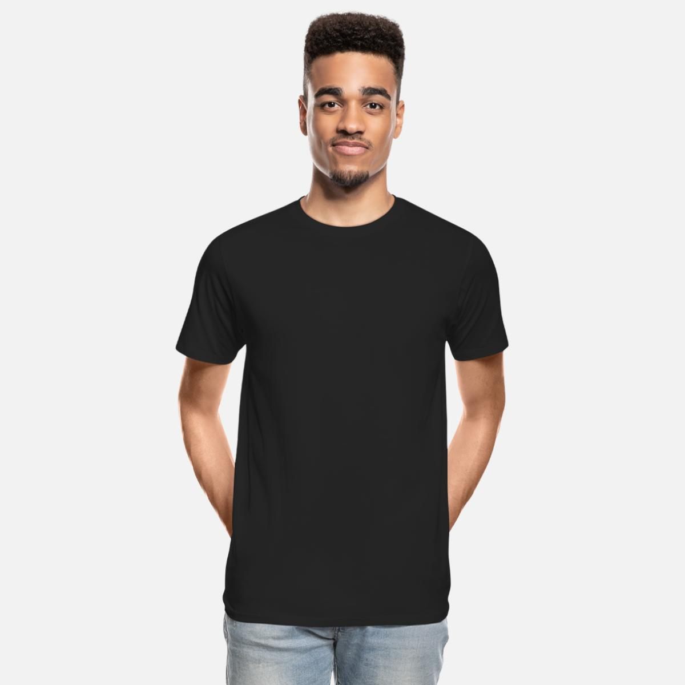

camisetas de 100% algodão orgânico
RS: 119,99
A moda tem o segundo maior impacto ambiental logo depois do petróleo. E apresenta um cenário de condições pouco adequadas aos trabalhadores. Quando o ramo têxtil e de confecção evita o uso direto de matérias-primas de origem do petróleo, utilizando principalmente o algodão orgânico e outros tecidos reciclados, como pigmentos de baixo impacto, respeitando processos de produção limpos, gera impactos positivos. Da matéria-prima ao processo produtivo de confecção da peça. Assim a BioVerde produz, otimizando impactos ambientais e sociais.